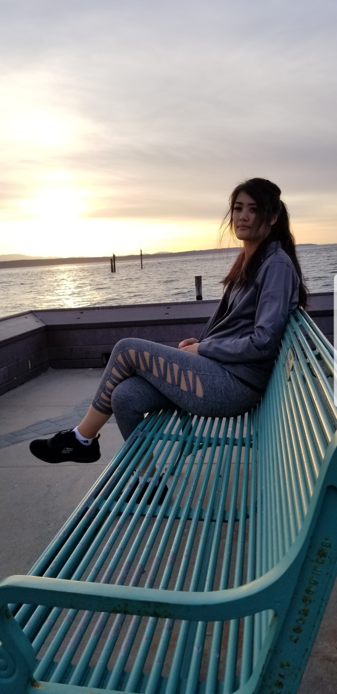
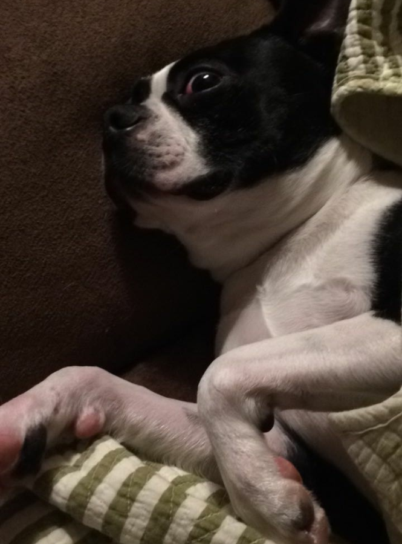
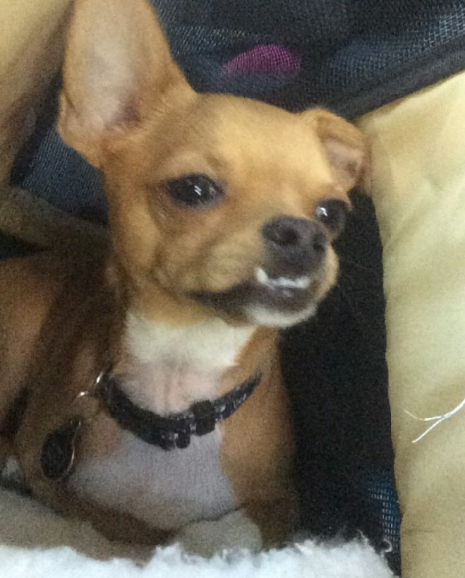
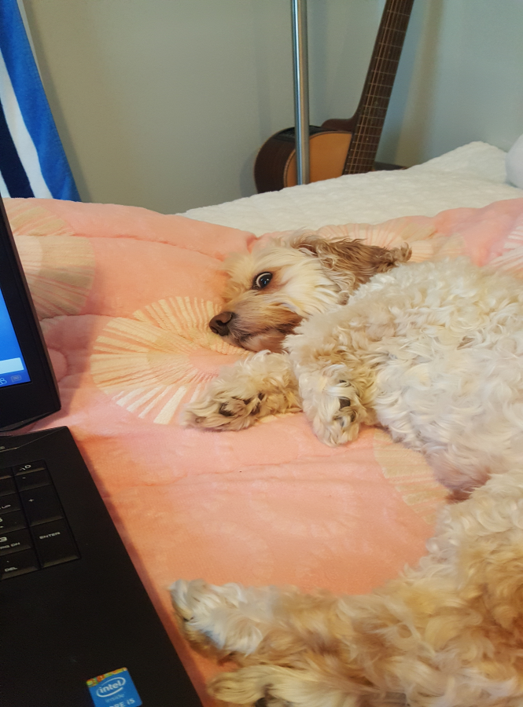

About Me

Hello! My name is Bridget Galang. I am currently attending Edmonds Community College as a first-year student. I chose to study
here because I wanted to pursue the Web Application and Cloud Developer Associate of Technical Arts Degree available here.
When I graduated in 2014 at North Thurston High School, I had no idea what I wanted to major in. In my mind I went from wanting
to be a photographer, architect, accountant, pharmacist and therapist. While I was being undecisive, I was convinced to attend
a community college to obtain an Associate of Arts Degree to later transfer to a University. I attended Pierce College in
Puyallup and got my AA in 2016. However, I still didn’t have an idea of what I wanted to do for a living, so I started working
at some entry level jobs in the meantime. Three years later I finally decided to pursue Web Development.
I was born and raised in Olympia, where I attended North Thurston High School. After I graduated, I moved to Parkland and attended
Pierce College. I moved to Edmonds around 1 1/2 years ago. I really enjoy living in Edmonds, because there are lot more places I
like here than in Olympia and Parkland(It's funny because Olympia actually got a lot more places I was interested in only after I
moved away). For example, boba drinks are my favorite drinks and there were very few to none in Olympia and Tacoma. But when I
moved to Edmonds, I suddenly had at least 3-4 boba stores to choose from. Other than stores, Edmonds is a very beautiful city.
I live in downtown Edmonds near the beach, and I get the privilege to see the water almost every time I drive.
Here are some pictures of my favorite dogs:


